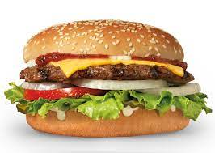

Hamburger

"The favorite lunch"
When I'm in need of a quick meal or a part dish,
a burger is hands-down my go-to pick! Burgers are easy,
fast, and don't even require utensils to eat, making them
the perfect get-together main course, tailgating essential,
and simple lunch recipe to whip up any night of the week..
“Ingredients”
- 1 sesame seed hamburger bun
- 2 onion rings
- ketchup
- burger ground beef
- pinch salt
- mayonnaise
- chopped lettuce
- tomato slices
- cheese for burgers
"How to prepare this gift from God"
- Preheat your grill or pan on high
- Toast both halves of the bun, face down, in a skillet over medium heat. Put aside
- Grill or fry the meat until is nice cooked; you might want to add salt if you like
- Start making your hamburger in the following order from bottom to top.
- bottom bun
- mayonnaise
- lettuce
- tomato slices
- onion rings
- beef patty
- cheese
- little mayonnaise
- ketchup
- top bun